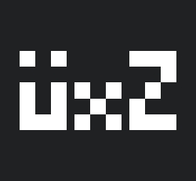
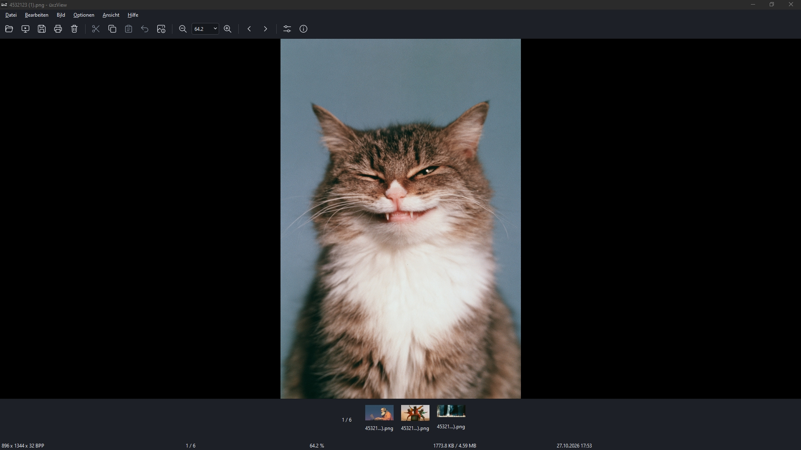

Inspiriert von IrfanView & nomacs. 100% kostenlos, Open-Source (GNU GPLv3) und gebraut mit C++20 & Qt 6.8. Inspired by IrfanView & nomacs. 100% free, open-source (GNU GPLv3), built with C++20 & Qt 6.8.

abca4072a05e72474bbab3f1e13998847957e6d3f232a7e003b252791e1abf75
Funktionen Features
Unterstützte Formate Supported Formats
| Kategorie Category | Formate Formats | Engine / Tiefe Engine / Depth |
|---|---|---|
| Raster & Web | JPEG, PNG (16-Bit), WebP, AVIF, HEIC / HEIF, TIFF, BMP, GIF (Animation), APNG, ICO | libjpeg-turbo / Qt / 16-Bit |
| Kamera-RAW | Sony (.arw), Nikon (.nef), Canon (.cr2, .cr3), Adobe (.dng), Fujifilm (.raf), Olympus (.orf, .rw2), PhaseOne (.iiq) | LibRaw 16-Bit Native |
| HDR & Spezial | OpenEXR (.exr), Photoshop (.psd Composite), SVG Vektor (.svg), Targa (.tga), DirectDraw (.dds), Netpbm (.ppm, .pgm), Radiance (.hdr) | Float 32-Bit / Vektor |
| Metadaten & Profile Metadata & Profiles | ICC Profile (sRGB, Display P3, AdobeRGB), EXIF, IPTC, XMP Metadaten, Mehrseitige Dokumente | Color Management Engine |
Als Standard-Betrachter festlegen Set as Default Image Viewer
Führe im entpackten Anwendungsordner die Skriptdatei register-windows.bat aus. Sie erkennt den Pfad zu uxzView.exe automatisch und registriert das Programm ohne Administratorrechte. Run register-windows.bat inside the portable application folder. It detects uxzView.exe automatically and registers the application without administrator rights.
register-windows.bat
Danach steht üxzView unter Windows in "Öffnen mit" und unter Einstellungen → Apps → Standard-Apps zur Auswahl. Zum Entfernen einfach unregister-windows.bat ausführen. Afterwards, üxzView appears in "Open with" and Settings → Apps → Default apps. Run unregister-windows.bat to remove the registration.
Kommandozeilen-Optionen CLI Parameters
| --fullscreen, -f | Startet direkt im Vollbild Launch directly in fullscreen |
| --slideshow <s> | Automatischer Bildwechsel (Sekunden) Auto-advance interval in seconds |
| --raw-fast | Halbe RAW-Auflösung für schnelles Culling Half-res RAW decode for fast culling |
| --scale <1:1|fit> | Standard-Skalierungsmodus beim Öffnen Default scaling mode upon opening |
Selbst kompilieren (Build) Build from Source
sudo apt install build-essential cmake qt6-base-dev libqt6svg6-dev libraw-dev
git clone https://github.com/micha42-dot/uxzView.git cd uxzView cmake -B build -DCMAKE_BUILD_TYPE=Release cmake --build build --config Release -j $(nproc) ./build/üxzView
Roadmap
Das KI-Experiment & 1E9 AI Experiment & 1E9
üxzView stammt von Entwickler und Journalist Michael Förtsch ( micha42-dot ) – gebaut mit ordentlich Unterstützung durch KI-Tools. Entwickelt wurde mit den Assistenten Codex und Cline auf Basis der Sprachmodelle GPT-6 Astra, GPT-6.1 Sol, Kimi K3 und GLM 5.3. Das Ganze ist gleichzeitig ein kleines journalistisches Experiment: In einer zweiteiligen Artikelreihe beim Tech-Magazin 1E9 beleuchtet Michael die Entstehung, Stolpersteine und Erkenntnisse beim Bau einer voll funktionsfähigen nativen Desktop-Software mit KI. üxzView was built by developer and journalist Michael Förtsch ( micha42-dot ) with plenty of assistance from AI tools. Development relied on the coding assistants Codex and Cline, powered by the AI models GPT-6 Astra, GPT-6.1 Sol, Kimi K3, and GLM 5.3. The project also serves as a journalistic experiment: in a two-part article series for the tech magazine 1E9 , Michael documented the creation, hurdles, and takeaways of building native desktop software using AI.